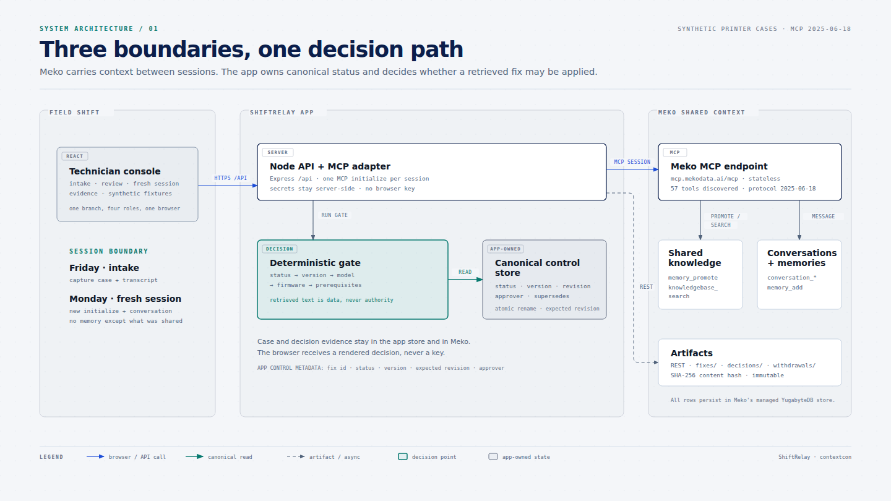
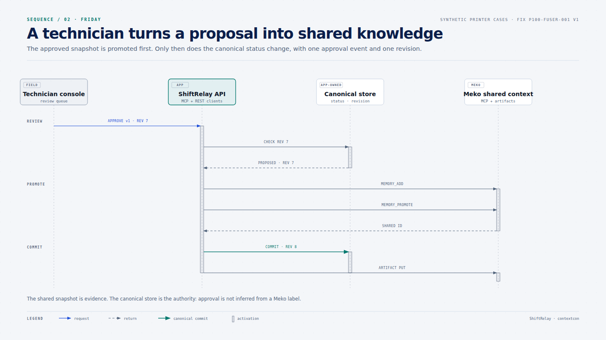
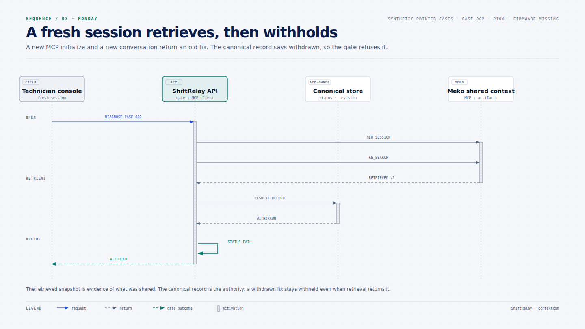
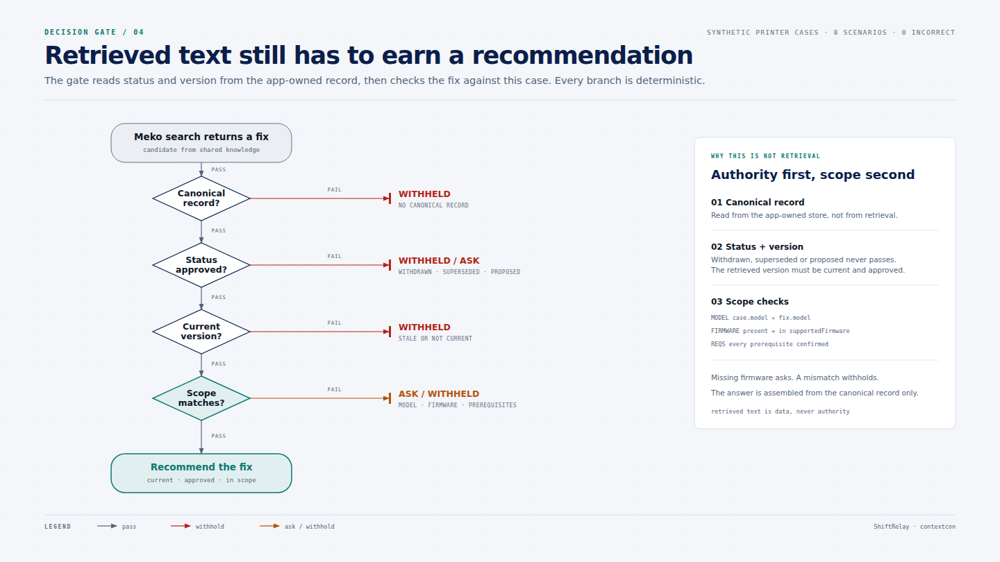
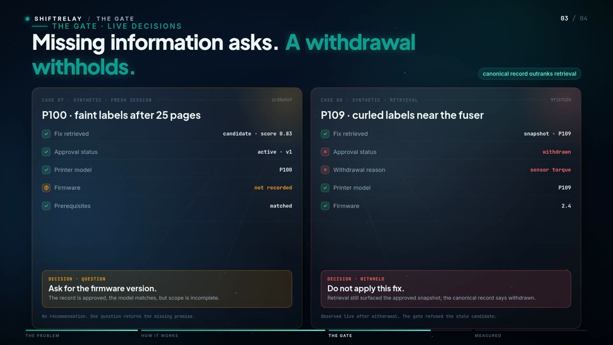

A field fix is only useful if the next agent can find it, trust it, and check that it applies to the current printer.
The next agent starts from the static manual, even when a colleague solved the same symptom yesterday.
A fix approved for firmware 2.4 is not automatically approved for 2.3. Model and prerequisites matter too.
A promoted memory can be withdrawn or superseded and still come back from search. The old text is evidence, not permission.
One datapack. Three roles. Every decision in its own session.
Transcript, model, firmware, symptom, site and prerequisites go to a Meko conversation and memory.
The proposal becomes an approved snapshot only with a named approver, the current revision, and a confirmed promotion.
New MCP initialize, new conversation, then knowledgebase_search. No reuse of the intake session.
Canonical status, current version, model, firmware and prerequisites. Recommend, ask, or withhold.




8 frozen synthetic scenarios × 2 arms. Every decision used its own Meko conversation. The baseline gets the same manual, but no promoted fix.
No direct YSQL connection string is exposed. ShiftRelay demonstrates YugabyteDB-backed operations through Meko only. Meko cannot un-promote or mutate a promoted memory through the verified API, so the app carries withdrawal and supersession in its canonical record.
Live retrieval after withdrawal still returned the approved snapshot in this fixture set. That is the point of the canonical gate, and it is recorded as a failure mode of retrieval-only designs — not hidden as a success.
